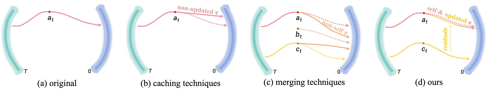
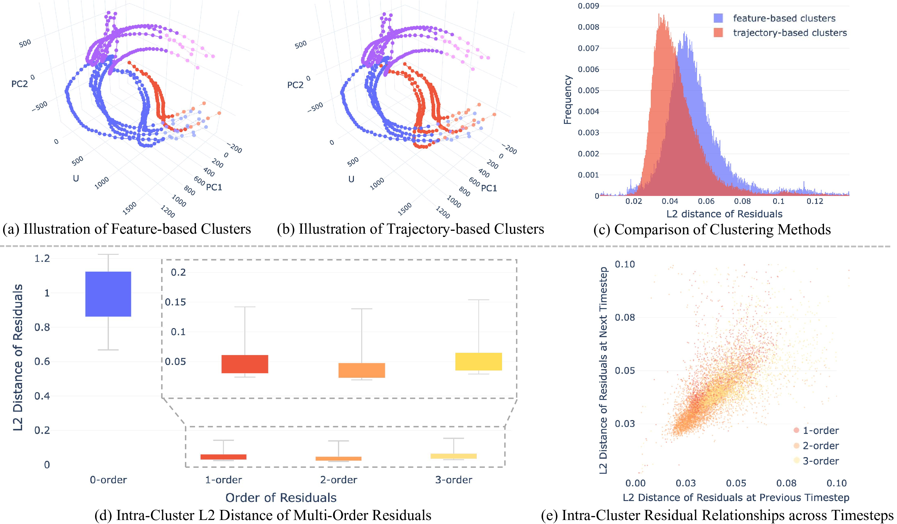
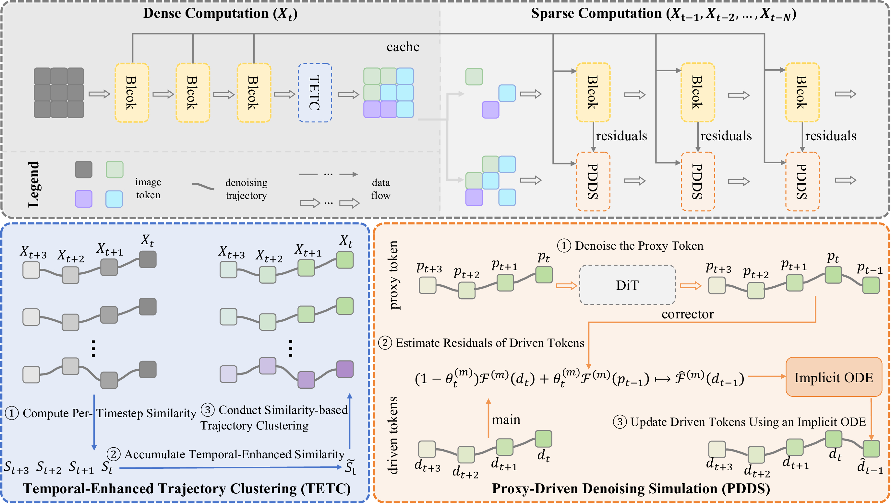
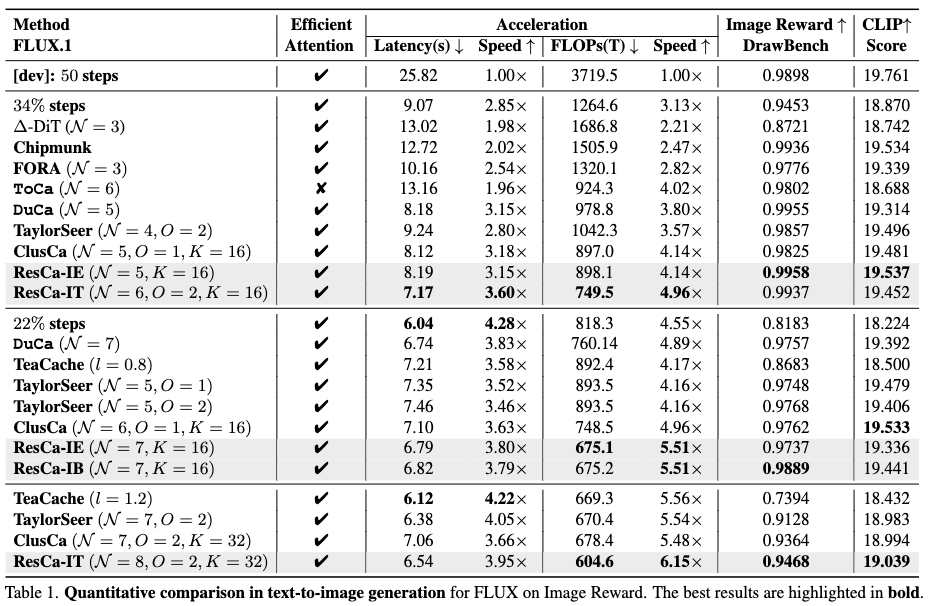
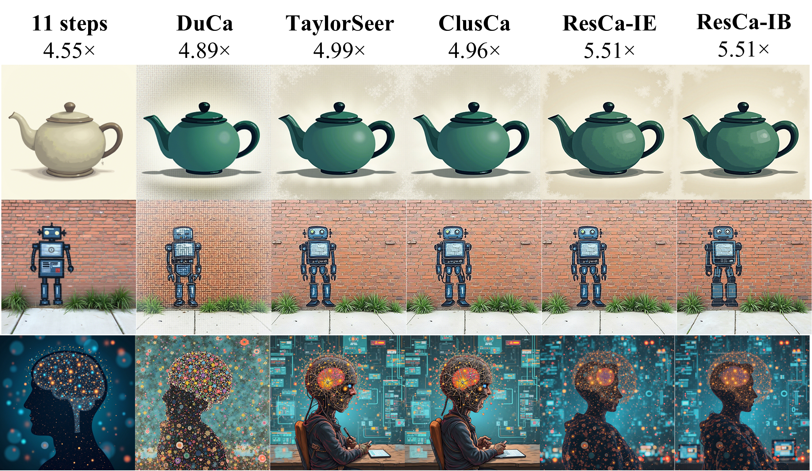
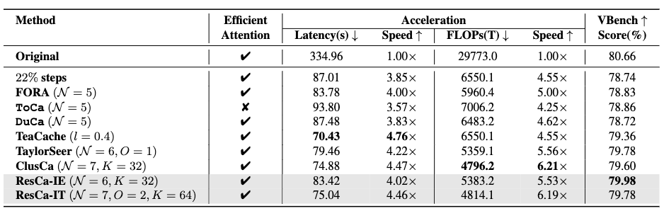
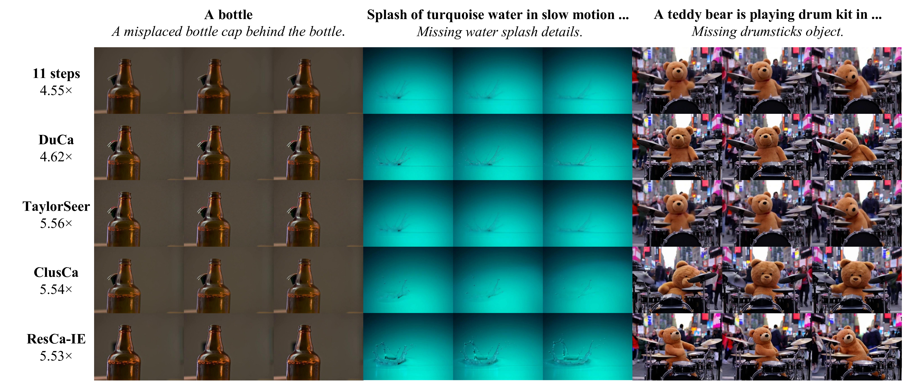

Diffusion transformers have achieved remarkable progress in high-quality image and video generation, but their high computational overhead remains a significant issue. Existing token reduction-based acceleration techniques, such as caching and merging, attempt to reduce this cost from both temporal and spatial perspectives but often compromise generation quality by introducing non-updated or non-self denoising directions. In this paper, we propose Residual Caching (ResCa), a novel, training-free framework that introduces a proxy denoising perspective to overcome these limitations. ResCa achieves acceleration while maintaining a denoising trajectory that is both self and updated. The core idea is to perform true denoising on only one “proxy token” within each trajectory-based cluster, and use its computed multi-order residuals to guide the “simulated denoising” of all other tokens. ResCa can be seamlessly integrated into various diffusion models, including DiT, FLUX, and HunyuanVideo. Extensive quantitative and qualitative experiments demonstrate the effectiveness of our method, achieving up to a 5.5× acceleration in GFLOPs while maintaining near-lossless generation quality on FLUX.
The key challenge of acceleration lies not only in reusing computation, but also in preserving a denoising trajectory faithful to the original one. Existing methods reduce computation by directly reusing cached or merged features, yet this often distorts the intended trajectory. To overcome this issue, we introduce proxy denoising, the core idea of our method. Instead of fully denoising every token independently, proxy denoising selects one representative proxy token within each trajectory-based cluster, performs true denoising only on this token, and uses its estimated trajectory change to guide the simulated denoising of the remaining cached tokens. In this way, the proxy token serves as a lightweight carrier of denoising dynamics, enabling acceleration while preserving the essential trajectory behavior of the other tokens.

(a) Original: Original denoising trajectory. (b) Caching: reuses the previous-step feature xta, forming a non-updated denoising direction, although it does not stay strictly fixed due to residual connections. (c) Merging: combines similar tokens such as at and ct into bt, and reuses xt-Nb, forming a non-self denoising direction. (d) Proxy denoising: true denoising is performed only on a proxy token, whose multi-order residuals Δk xt-Nc are then used to guide the cached feature xta, thereby producing a trajectory that is both self and updated.
Tokens with similar historical denoising trajectories tend to share similar low-order residual dynamics. This suggests that residuals from one representative proxy token can guide the denoising of other tokens in the same cluster. Based on this observation, we perform trajectory-based clustering and reuse multi-order residuals for efficient proxy denoising.

We propose ResCa, a residual caching framework built on proxy denoising. Instead of denoising all tokens at every timestep, ResCa divides the process into dense and sparse steps. In dense steps, all tokens are processed to build their historical trajectories and form trajectory-aware clusters. In sparse steps, only one proxy token is denoised in each cluster, and its residual dynamics are used to simulate the denoising of the remaining driven tokens. In this way, ResCa reduces computation while preserving a denoising trajectory that remains both self and updated.

We evaluate ResCa on text-to-image generation with FLUX.1-dev and text-to-video generation with Hunyuan-Video. Across both tasks, ResCa achieves a stronger quality-speed trade-off than prior caching-based methods. These results show that proxy denoising enables faithful acceleration in both image and video generation.

(a) Quantitative comparison on FLUX.1-dev.

(b) Qualitative comparison on FLUX. ResCa preserves finer details and better text-image alignment.

(c) Quantitative comparison on Hunyuan-Video.

(d) Qualitative comparison on Hunyuan-Video. ResCa produces more complete and semantically aligned video content.
@inproceedings{fang2026resca,
title={ResCa: Residual Caching for Diffusion Transformers Acceleration},
author={Fang, Haipeng and Li, Yu and Tang, Fan and Lu, Yixing and Cao, Juan and Tang, Sheng},
booktitle={Proceedings of the IEEE/CVF Conference on Computer Vision and Pattern Recognition (CVPR)},
year={2026},
}